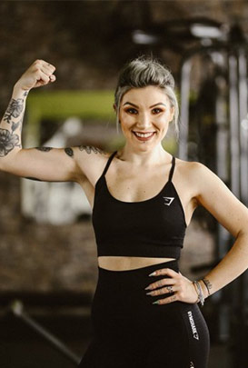

ANTRENOR PERSONAL.
De ce sa mergem la sala si sa lucram cu un antrenor personal? Nu ne nastem invatati iar a cere ajutor este ceva uman uneori extrem de important in dezvoltarea noastra. |
|
|---|---|
| In ultimii ani au fost concepute aparate de fitness care să limiteze la maxim greselile de executie, iar FitClass se numara printre cele mai bine dotate GYM-uri care folosesc acest tip de aparate. Cu toate acestea, antrenorul personal ramane acea persoana care va poate ghida cel mai eficient printre aparate, va sta la dispozitie pentru a va alcatui un program complet si complex menit sa va aduca rezultatele pe care le doriti, el este cel care va poate sfatui din punct de vedere nutriționist si al dozarii efortului. El este profesionistul care va va motiva si va va corecta permanent pentru a nu permite in niciun minut ca tehnica de executie să fie incorecta | Alegerea ordinei în care vor fi lucrate aparatele si exercitiile din sala de fitness este extrem de importanta, de aceasta alegere depinzand succesul sau insuccesul programului de antrenament privit prin indeplinirea telurilor pe o perioada de minim o luna. Antrenorul personal este acea persoana responsabila pentru reusita dumneavoastra! Lasati-ne sa va aducem la forma mult visata in cel mai scurt timp, respectand principiile antrenamentului si tinand cont de sanatatea dumneavoastra! Pentru acest lucru FitClass a facut o selectie minutioansa si a ales antrenori de top |
|  | MARIANA EPURE Absolventa a Facultatii de Educatie Fizica si Sport din cadrul Facultatii Ecologice din Bucuresti; Atestata de CNFPA ca si Instructor Sportiv, Mariana lucreaza de mai multi ani in domeniul aerobic-fitness, intr-o continua cautare de informatii si cu o vasta experienta profesionala. |
|---|---|
 |
IULIAN RUSU Activitatea sportiva de la varsta mica il determina sa devina un pro-activ in ceea ce priveste educatia fizica. Unul din hobby-urile lui Iulian este nutritia. Cu ajutorul lui Iulian au avut rezulatate excelente multe persoane. |
 |
ANDREI POP Absolvent al Universitatii de Educatie Fizica si Sport Bucuresti, Atestat Instructor Fitness IFBB din 2009, reuseste sa indeplineasca obiectivele clientilor cu profesionalism. |